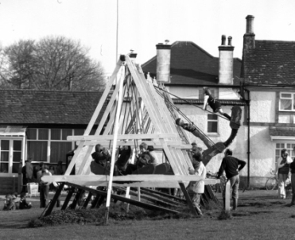

PRE-HISTORY to PRESENT DAY
Neolithic
The beginnings of the pastoral landscape we know today as Farthing Downs very likely began when, over 2000 years ago, visitors brought animals with them to graze the meadows within the woodland. An ancient trackway still exists today which predates the Celtic field boundaries created by farmers on the Downs 2000 years ago. The trackway was used by the Neolithic visitors. Neolithic pottery and archaeology has been found on the Downs and in nearby gardens and is evidence of early human occupation of the Downs.

Bronze and Iron Age
Before the Bronze Age, chalk downland, including Farthing Downs and Happy Valley, had remained mainly wooded. Bronze Age settlers were the first to clear the trees and later, in the Iron Age, larger sections were cleared and ploughed for crops. The chalk downland was chosen for farming by Iron Age people because the soil was light and easily ploughed. The Downs were farmed up to the 2nd century AD. The ridges, or lynchets, which can be seen crossing the Downs were created by the ancient farmers whose ploughing methods moved the soil outwards and downhill. The lynchets on Farthing Downs which divided the ancient field system date from the early Saxon period.
By Anglo Saxon times the light chalk soil had become impoverished although better ploughs had been developed to cope with heavier and more fertile soils elsewhere. From then on the chalk downland was used for grazing.
18th Century
1784: Map and description of Coulsdon area by Thomas Bainbridge
Victorian and Edwardian Era
1871: Archaeological Survey: Excavation of 16 Burial Mounds by John Wickham Flower (see Archaeology).
1883: Sale of Farthing Downs to City of London: It was the Victorians who first recognised the need to preserve open spaces around London as a benefit to the health and well-being of the new urban dwellers in the fast growing City. The City of London bought Farthing Downs from Coulsdon’s Squire Edmund Byron in 1883 as Common Land. The purchase was enabled by both the Epping Forest and the Open Spaces Acts dating from the 1870s which allowed the City to purchase land around London for public use. The Acts recognised the objectives for both the care of the landscape and its importance as a recreational environment for people. The City has chosen to deal with these objectives through individual Charitable Trusts for each of its sites and each has an Open Space Act which helps to define how it should be maintained.
|
Early byelaws ruled against: ‘turning out uncommonable or unmarked animals'; 'applying for hire without a license'; 'using unauthorised portion of Coulsdon Commons as standing places', 'bringing horses on or over footpaths or lands set apart for exercise sports or games'; 'riding to the danger of the public or injury of commoners' cattle'; and 'racing or training horses or dogs'.
|
1889: Coulsdon and Cane Hill (Coulsdon South) Station opens: Originally for the benefit of the patients at the then Cane Hill Asylum. This must have also benefited those who would have taken the train to Coulsdon to enjoy the open countryside, fresh air and picnic on Farthing Downs – the only public facility was the water fountain which once stood in front of the keepers’ cottages.
The Twenties and Thirties
1920s: ‘Welcome Tea Rooms’: As motorised travel grew, so did the number of charabancs bringing families from the suburbs to Farthing Downs for a day out in the countryside. The following photographs, taken from a brochure put together by the owner of the original Farthing Downs ‘Welcome Tea Rooms’, tell their own story. The brochure was tucked inside a book taken into a second hand book shop in Angus and was very kindly sent to the Friends of Farthing Downs in June 2011 with a letter reproduced here. No one had previously been aware of the leaflet and the Friends are very grateful to the shop owners for their trouble.


Dating the Brochure
The brochure is double-sided folded in two to give four 6"x4½" pages:
Proprietor: H. Goddard, Phone: Merstham 177. The brochure says “Come by 58, 59 and 414 omnibuses or Electric Train to Coulsdon North…Large and small parties catered for. Seating accommodation for 1,000.” From the picture, The Welcome Tea Rooms appear to have been a large building either standing behind the current keepers’ cottages or where they now are. Notice also the charabancs and swingboats. So when was this brochure produced?
From Redhill and Reigate History Society, we learned that Merstham exchange opened in 1910 and had only 43 lines at 1st January 1911. The Downlands exchange started as a hypothetical exchange at Merstham on 16th June 1930 and subsequently moved to Hollymeoak Road, Coulsdon. Telephone number Merstham 177 seems to have existed between 1918 and 1930. The London Transport Museum informed us that Routes 58, 59 and 414 served Coulsdon from 1924 to 1934, 1922 to 1986 and 1924 to 1992 respectively. Electric trains (overhead system) served Coulsdon North (but not Coulsdon South) from 1925 to 1929.
So our brochure dates from the late 1920s.
The tea and cakes served from the 'Tea Rooms' in the 1970s that most of us remember is NOT the old Welcome Tea Rooms but the Swingboats are the Swingboats (1978).

© Dr Neil Clifton and Creative Commons Licence (the image has been cropped)
|  |
World War II
Trenches were dug across the Downs to stop it being used as a landing strip. Stationed there at the time was an RAF Officer, Brian Hope-Taylor. He spent is off duty time exploring and noting the archaeological features. After the war Hope-Taylor returned to lead an archaeological dig.
(See below and Archaeology.)
1948: Farthing Downs gains Ancient Scheduled Monument Status
Archaeological surveys during 1946/47 headed by Brian Hope-Taylor scientifically established the history of ancient Farthing Downs dating back to 2000 (late Neolithic times). In 1948, following a rigorous campaign, Hope Taylor and his volunteers celebrated the announcement that Farthing Downs was to become an Ancient Scheduled Monument (see Archaeology).
1966: Metropolitan Green Belt Status:
Farthing Downs is designated Metropolitan Green Belt and is no longer regulated Common Land ending the rights of local residents to graze their animals on Farthing Downs!
1970s: Farthing Downs and Happy Valley recognised as Sites of Special Scientific Interest (SSSI)
Most of the North and South Downs were grazed until the 1960s which maintained their impoverished grassland. As a result of centuries of grazing, chalk downland developed a very characteristic ecology of plants (and associated wildlife). This created swathes of grassland carpeted with wild flowers not natural to woodland but which had migrated inland from the sea and cliff edges. These once vast areas of land reaching from Surrey to Dover and from Dungeness to Wiltshire formed the most interesting and richest of the semi-natural habitats in Britain.
Chalk grassland has decreased through building development and, unfortunately, not all chalk grassland that survives still has archaeological features or is rich in wildlife as they are destroyed by modern agricultural techniques (ploughing, chemicals and frequent cutting) or neglect (leading to invasion by thorny scrub). It is estimated that some 320 hectares of chalk grassland survive in London – but it needs looking after by grazing, scrub clearance and grass cutting and removal. Much of the chalk grassland remaining is in public ownership so, like the Coulsdon Commons, this grassland is easy to visit (see Conservation).
An aerial photograph of Farthing Downs taken in 1944 (below) shows trenches dug during WII to prevent the Downs being used as an airstrip and shows a landscape fairly clear of scrub. From 1937 to 1970 Farthing Downs was being grazed by smaller herds of cattle. A similar photograph taken in 1988 still shows the war time trenches but the land is almost completely covered in scrub. Since the cattle were taken off the Downs in 1970 the scrub very quickly spread.

1975: Farthing Downs (along with Happy Valley) was designated a Site of Special Scientific Interest (SSSI) by English Nature (now Natural England). Farthing Downs was recognised as the most extensive area of semi-natural downland habitat in Greater London being species rich with neutral grassland, diverse scrub, ancient hedgerows and pockets of ancient woodland supporting a wide variety of species of plants and animals (see Wildlife).
Croydon Council also designates Farthing Downs as a Site of Nature Conservation Importance with a northern quadrant of panoramic views.
1977 saw the closure of a smaller ‘Welcome Tea Rooms’ which had been keeping walkers and visitors refreshed with teas, soft drinks, cakes and ice creams. The Tea rooms were replaced by ‘The Downs Restaurant’ which survived for a while but when that venture failed the building was sold for conversion to a house before the City of London could act to save it. With the loss of the popular swingboats, the final demise of a tea rooms and with foreign travel and weekends away becoming more the norm it was believed by local residents that at the beginning of the 1980s the Downs were beginning to lose their attraction.
The 90s and the Millennium years
1992: Re-introduction of grazing animals to Farthing Downs
In 1991 the City of London proposed the re-introduction of a herd of Sussex Cattle to Farthing Downs to help maintain the encroaching scrub and create and improve the habitats for birds, insects and small mammals.
Residents’ fears and a public meeting
Some local residents were both concerned about and suspicious of the plans. East Coulsdon Residents’ Association invited Mike Enfield, the then superintendent for the Coulsdon Commons, to report on the proposals to their AGM in June 1992. The Cameron Hall was full with standing room only when Mike took the floor to answer residents’ concerns ranging from danger to dogs and horse riders to ‘was the City creating a farm by stealth’. Mike outlined the benefits of re-introducing cattle to the Downs and the proposals designed to protect both the public and the animals from danger. He went on to explain, showing illustrations of flower filled meadows, that the cattle would be there to keep the scrub down and enable the rare wildlife to flourish, as they had done for a millennia. Mike reassured residents that rustic fencing and cattle grids would restrict the grazing area and that Sussex Cattle had been specially selected for their quiet and docile nature.
Locals calmed and Sussex cattle arrive
The East Coulsdon Residents’ Association (ECRA) meeting successfully calmed local fears and the herd arrived the following year. In the ensuing years the Farthing Downs cows have become part of the local landscape giving pleasure and enjoyment to residents and visitors alike. Wildlife too has benefited with unexpected additions – Farthing Downs now provides a habitat for over 30 species of Dung Beetle (there are only 60 species found in Britain overall). Yellow Ant colonies have increased and the summer show of meadow flowers can be spectacular (see Wildlife).
An apocryphal local storey: Have Martians landed?
Shortly after the cattle had arrived the local police received a call from a distressed resident who, while driving across the Downs one night, reported that ‘aliens had landed on Farthing Downs – he could see their flickering lights moving around in the distance’. The aliens turned out to be the cows who had reflective bands on their feet so they could be seen in the dark.
Millennium Cairn and beyond
1998: Proposals for a Cairn on Farthing Downs to mark the Millennium: Proposals were announced in the September edition of the East Coulsdon Residents’ Association newsletter ‘The Review’. Ideas on how to progress the project and how the Cairn should look had been discussed throughout the summer at meetings of the ‘Coulsdon Millennium Partnership’ a group formed to coordinate Coulsdon’s events for the year 2000. In discussions with the City of London’s Farthing Downs Rangers it was agreed that, as a first step, the City would suggest suitable sites for the Cairn and then approval for the Cairn’s chosen location would be sought from English Heritage (responsible for protecting and promoting Farthing Downs under its Ancient Scheduled Monument status).
July 1998: Public meeting to discuss problems with the Middle Car Park, Farthing Downs:
The middle car park, which had been opened in the early 1970s, was now the cause of concern to local residents who suffered noise and disturbances after dark which emanated from the car park. Proposals for barriers were agreed by the meeting which took place in the car park itself. Offers by local residents to be responsible for locking and opening the gates were respectfully declined by rangers. The middle car park eventually had to be closed and was left to return to nature. A largish square indent can still be seen on the left of the Downs just before the Folly as you drive south down Ditches Lane.
1999: Selecting a site for the Cairn: A site visit was arranged by Farthing Downs Rangers for the Millennium Committee to select a site from a choice of three suggested by the City. An archaeologist from the Croydon Natural History and Scientific Society donated his services for the dig (see Archaeology). English Heritage agreed to the proposals on the grounds that a representative would approve the site and then oversee the dig. Following a site visit by English Heritage’s Ellen Barnes a date for the dig was set for 18th November 1999.
An article describing the day appeared in the December 1999 edition of the ECRA Review and is reproduced here.
|
A visit to Farthing Downs will never be the same again!
Having lived in Coulsdon for 26 years and enjoyed unspoiled views of Farthing Downs from my house I felt very privileged to join a team made up of Corporation of London Keepers, Millennium Partnership members, and an Archaeologist from the Croydon Natural History and Scientific Society to carry out survey on the Ancient Monument on the Downs. Our main task was to establish the width and depth of a World War II trench – a site chosen for a flint Cairn (Coulsdon’s Millennium Monument) and to check for any signs of ancient graves. If you have been following the progress of the proposals for the Cairn over the last year, you will appreciate just how important the results of the search would be. The survey was the last major hurdle for our project and we hoped for the word from Ellen Barnes of English Heritage, due to visit that day, that she was sure that the foundations of our monument would not disturb any ancient Saxon remains.
The dig began at 9.30 a.m., and would continue for most of the day. While this was going on Andrew Scott of the Corporation of London, gave a guided tour and talk to parties of children from local schools. To introduce them to the history of the Downs he showed them the ridges made by the Celtic field systems dating from 50BC, when the downs had been farmed, the Saxon tumuli and nearby graves. He told them about the mystery surrounding the three skeletons found in 1949 in a shallow grave on the Northern slope. No one has any real answers yet as to why two men had been buried face-up with a woman in the middle face down. To finish the tour the children were guided to the site of the dig and Jim Davidson our archaeologist gave them a talk about the work.
At 12 noon when the morning tours had been completed the press arrived. Our local TV company, Cable 17 were keen to broadcast a news item at 5.30 p.m. and spent sometime on filming scenes of the Downs and interviewing our nominated spokesman (Andrew again). This turned out very well and will be edited into a video record of the Millennium events in Coulsdon with a copy for the time capsule. The Advertiser took some dramatic shots of Jim with pickaxe in hand. Although we knew that late November might not provide the best weather, we had decided that we should press ahead with the dig. In the event Farthing Downs photographed well in the bright sunlight and clear air of a typically English autumn day.
At 3.00 p.m. when the light was beginning to fade it was agreed that the width and depth of the trench, one of many dug on the Downs to prevent German gliders from landing, had been excavated. We had been lucky that we had chosen a very suitable site for the Cairn. The trench was measured and photographed for scientific records then lined with polythene, refilled and the turf replaced. Although we would all have been happy to be present at an archaeological discovery, we were equally pleased that when Ellen had visited the site in the early afternoon she had been able to give the go ahead for the Cairn.
Thanks to the team, which also included, Louise Niekirk, Farthing Downs Keeper, and Reg Baker, Chairman of Coulsdon West, who both worked extremely hard, but really enjoyed being assistant archaeologists for the day.
|